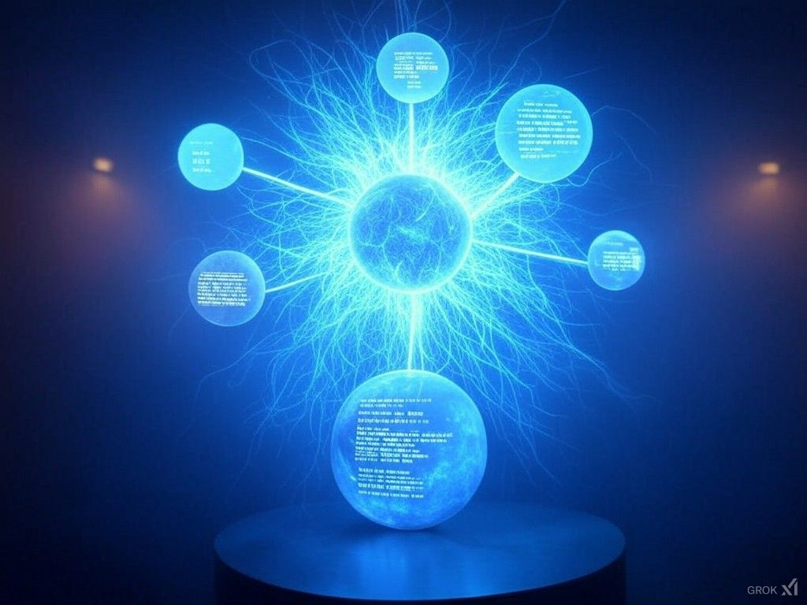

זה מה שהופך את ה-AI לכוח משבש כל כך חזק: מהפכת הבינה המלאכותית לא מתקדמת בקו ישר - היא נעה במעגלים 💡
פורסם במקור ב LinkedIn
זה מה שהופך את ה-AI לכוח משבש כל כך חזק: מהפכת הבינה המלאכותית לא מתקדמת בקו ישר - היא נעה במעגלים 💡
מעגלים שבהם כל שכבה מזינה את הבאה, וכלים שנוצרו אתמול הופכים לתשתית של הכלים של מחר.
הרעיון פשוט, אבל עוצמתי - שכבות שמזינות זו את זו:
1️⃣ בניית המודלים הגדולים – השכבה הבסיסית
במעמקי עולם הבינה המלאכותית נמצאים המדענים, המהנדסים והחוקרים שבונים את התשתיות הגדולות: GPT, Stable Diffusion, או BERT.
הם יוצרים את ה"מוח" הגולמי, בעזרת כוח מחשוב אדיר, דאטה עצום ומשאבים בלתי נגמרים.
השכבה הזו קיימת כבר מעל עשור ומתפתחת בקצב אקספוננציאלי, אבל העבודה שלהם היא רק ההתחלה.
2️⃣ פיתוח כלים עם המודלים – השכבה היישומית
על בסיס המודלים האלה נוצרים הכלים שאתם מכירים: ChatGPT, DALL·E, Copilot ועוד.
מפתחים משתמשים ביכולות המודלים כדי ליצור פתרונות מעשיים לעסקים, לארגונים ולאנשים פרטיים. החל מחברות לנהיגה אוטונומית בטרקטורים Blue-White, ועד צ'אט מותאם אישית למוצר שלך.
3️⃣ פיתוח כלים באמצעות הכלים – השכבה היצירתית
השלב הזה הוא הקסם האמיתי: הכלים שנוצרו בשכבה 2 הופכים לתשתית עבור יצירת כלים חדשים לגמרי.
מתכנתים משתמשים ב-Copilot כדי לכתוב קוד למערכות חדשות.
מנהלי מוצר משתמשים ב-ChatGPT כדי לתכנן וליצור כלים ייחודיים לעסק שלהם.
4️⃣ שימוש בכלים שנוצרו בעזרת הכלים – השכבה האוטומטית
וכאן הדברים הופכים להיות אפילו יותר עמוקים: הכלים שנוצרו בשכבה 3 הופכים נגישים לכל אחד ועם רף כניסה נמוך ביותר, גם ללא ידע טכני.
לדוגמה:
Text-to-Website – כלי שמאפשר לבנות אתרים שלמים על בסיס טקסט בלבד.
כלי אוטומציה מותאמים אישית שנבנים בלי שורת קוד אחת.
בשלב הזה, הכלים מפתחים פתרונות בעצמם – כמעט ללא התערבות אנושית.
בנוסף, מעניין לראות שהתנועה המעגלית הזו נעה על מספר צירים במקביל:
📜 מחוללי טקסט – ליצירת תוכן, קוד ותסריטים בקצב חסר תקדים.
🖼️ מחוללי תמונות – כמו DALL·E, שמייצרים תמונות ועיבודים מתקדמים מתיאור מילולי בלבד.
💻 מחוללי קוד – Copilot ואחרים שמשנים את הדרך שבה תוכנה נכתבת.
🎙️ מחוללי קול – יצירת סאונד, חיקוי קולות ויצירת מוזיקה.
📊 ניתוח נתונים – כלים שמפענחים מידע עצום כדי לחזות מגמות ולעצב אסטרטגיות.
🎥 מחוללי וידאו – כמו Runway, שמאפשרים יצירת תוכן ויזואלי עשיר בקלות.
כל תחום כזה הוא שכבת צמיחה אנכית בפני עצמה, שבה חדשנות מתרחשת
בקצב מטורף, מכילה כלים שונים, קהילות שונות, וקהלים שונים.
האקוסיסם
ניסיתם פעם למקם את עצמכם, איפה אתם נמצאים? באיזה מעגל, ועל איזה ציר?
